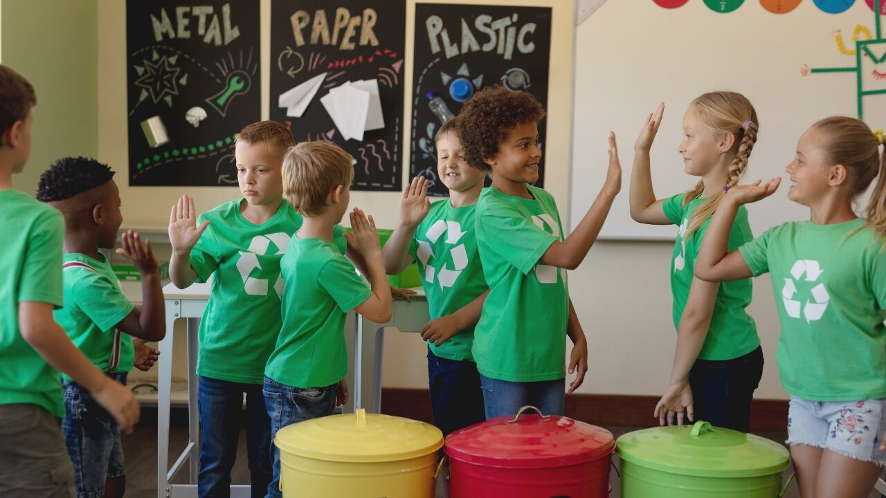
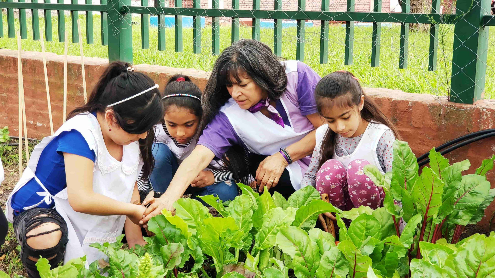

Hacer del cuidado ambiental un hábito
Es sabido que la juventud es el futuro, y para lograr tener uno mas involucrado con la naturaleza y sus cuidados, debemos comenzar una educación ambiental en el contexto educativo.
 Programas
Programas
Nuestros programas dedicados exclusivamente a la defensa del medio ambiente, han cuntribuido satistafactoriamente en la mejora del mismo. Ademas orientaron a gran parte de la población a construir juntos un mañana más limpio que hoy.
Es sabido que la juventud es el futuro, y para lograr tener uno mas involucrado con la naturaleza y sus cuidados, debemos comenzar una educación ambiental en el contexto educativo.

Proponemos que el ambiente educacional realice actividades dinámicas para motivar a los chicos a interesarse en el tema y las pongan en practica con frecuencia en el día a día
Algunas prácticas que planteamos son:
Queremos influir a los jovenes a despertar una conciencia ambiental que siempre este presente en ellos. Ademas, invitamos a los profes a participar tomando riendas en el asunto y que le enseñen a las futuras generaciones a como tener una buena relación con el ambiente

Un gran cambio comienza con una pequeña acción. Estas a un click de marcar la diferencia Sumate